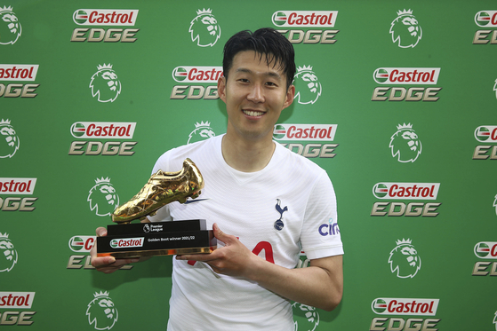

Tottenham Players
Go Homepage
- GoalKeepers
- Hugo Lloris
- Fraser Forster
- Center Backs
- Eric Dier
- Davinson Sanchez
- Christian Romero
- Ben Davies
- Japhet Tanganga
- Joe Rodon
- Rightbacks
- Matt Doherty
- Emerson Royal
- Leftbacks
- Ryan Sessegnon
- Sergio Reguilon
- Evan Persic
- Central Midfielder
- Pierre-emile Hojberg
- Rodrigo Bentancur
- Harry Winks
- Oliver skipp
- Yves Bissouma
- Wingers
- Son Heung Min
- Steven Bergwijn
- Dejan Kulisevski
- Lucas Moura
- Strikers
Premier league Top Scorer
Son Heung Min , 22 Goals
